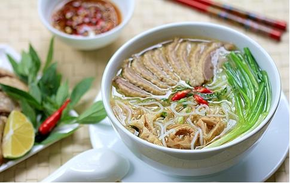

Chi Tiết Sản Phẩm
Bún Ngan
Là hàng bún ngan được xếp vào hạng ngon nhất nhì Hà thành, không quá ngạc nhiên khi đến Nhàn thưởng thức một bát bún, bạn sẽ phải kiên nhẫn đứng xếp hàng cùng cả người dân và khách du lịch. Bát bún ở đây được chủ quán tỉ mỉ trong từng chi tiết. Từ nước dùng ninh bằng xương ngan và nấm khô dậy hương, cho đến miếng ngan béo, mềm, ngọt thịt. Măng ăn kèm cũng là măng khô ninh kỹ, thêm mọc thịt tươi vừa dai vừa giòn.